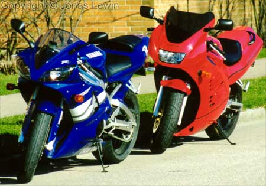
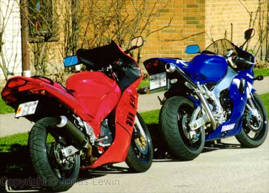
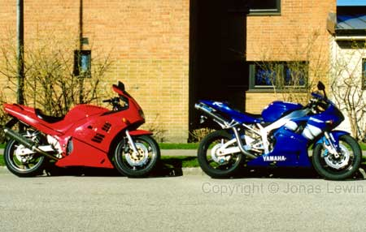
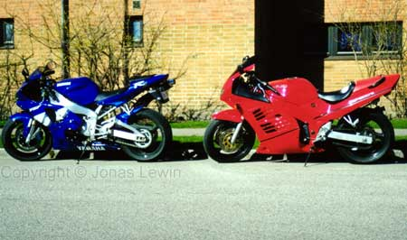

My old and my new bike.
|
As
you might have read on this page before, I said that I wanted to buy an R1.
So I did. Simply because of the looks. And it does look cool to me. However,
some of my friends still thinks that the old bike looks better. Well, I'm satisfied the looks of it, and that's all that matters. It's amazing how big difference there is to the old one. After driving the new one for a while, the old one seemed not to move at all. To give you the details so you may understand a little bit better. The old had a horsepower/kg value of around 0.5 hp/kg. The new one has 0.98 hp/kg. Do you agree with me that the new one is moving when you use the throttle?   |